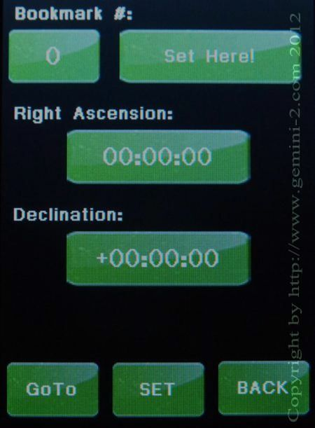

| Interactive Hand-Controller Menus - click on green button to Navigate |
|  |
This screen lets you create custom bookmarks that you can save and
return to. Create up to 10 bookmarks. Enter the RA and DEC by clicking on the green boxes for each, which will take you to a menu to enter the value. Note: The values are entered in Hours (0-23):Minutes (0-59):seconds (0-59) for RA and Degrees (+/-0 to 90):Minutes (0 to 59): seconds (0-59) for DEC. Use the Set button on the bottom of the screen to store the bookmark. The Set Here Button will set the bookmark at the current mount position. Use the GoTo button to go to the currently selected bookmark. |